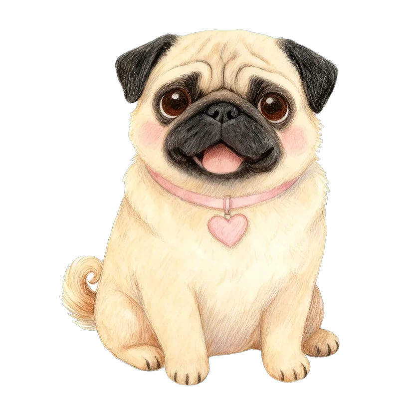
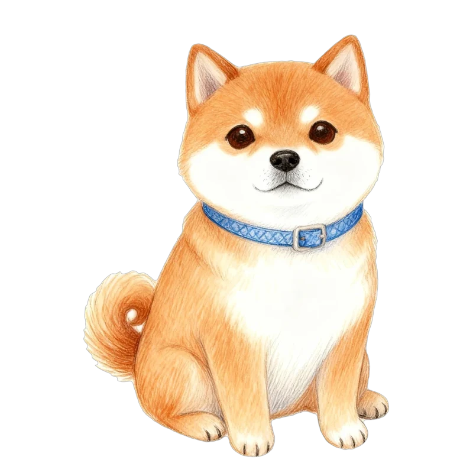
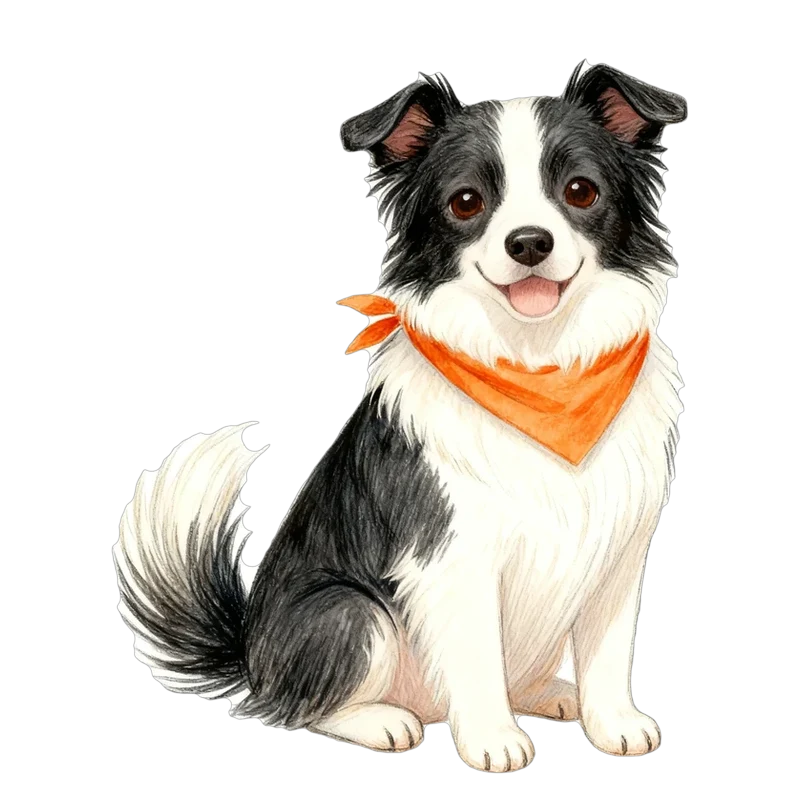
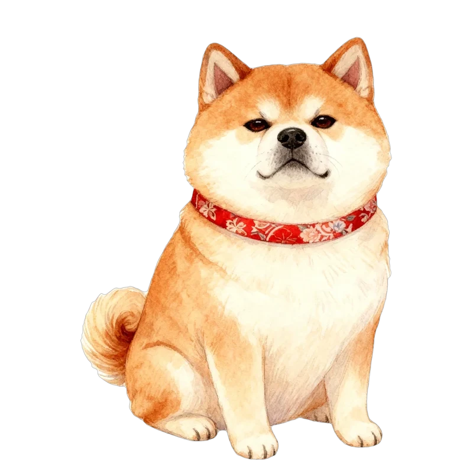
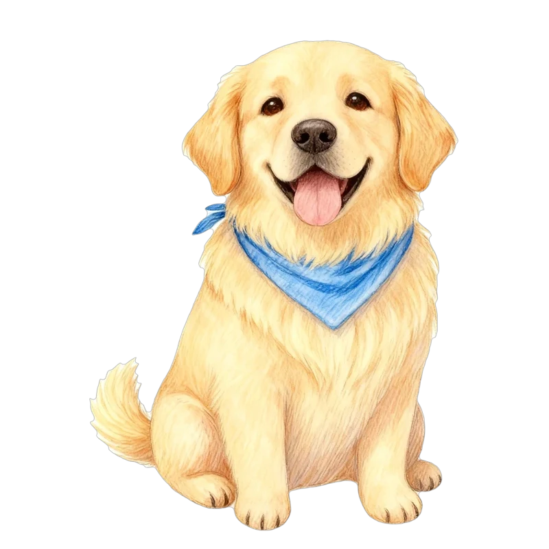
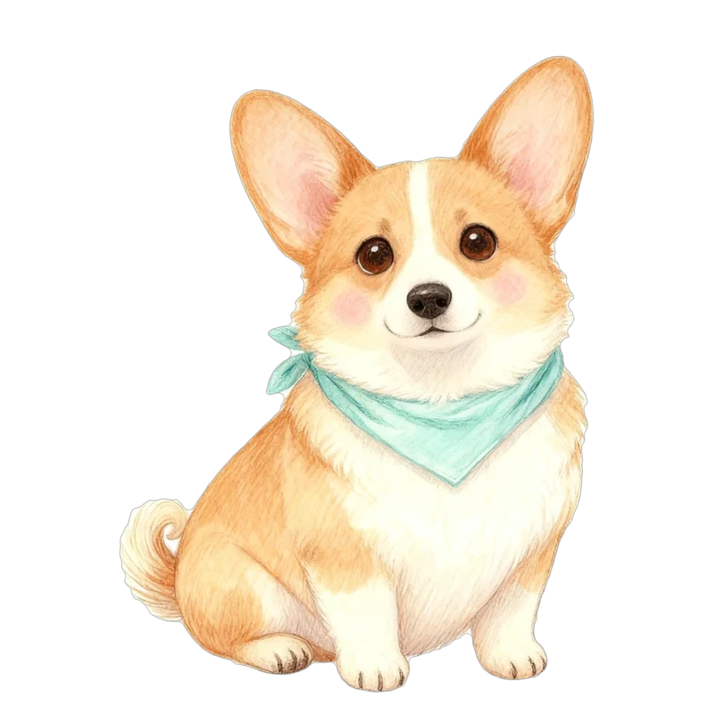

成長の記録・予定のリマインド・ワン友帳。LINEでログインした人が使える特典のイメージです（文や数字は例）。
0ログインのさそい方
LINEでログインすると、無料でこんなことができます。
ログインしなくても、診断やカードは今までどおり無料で使えます。
1成長の記録

こむぎ
あずき＋ 追加

1歳のころより、だんだんおっとり、甘えんぼになってきました。
44Wansonalities
2予定のリマインド
ここに出るのは、あなたが入れた予定だけです。注射やお薬の時期は、かかりつけの獣医さんに相談してください。
44Wansonalities
3ワン友帳（QRで交換）
相手に読んでもらうと、こむぎがワン友帳に入ります。
QRを、わくの中に入れてください

ハナサモエドハートのゴールデン9/14 公園
ポテト柴犬ハートのコーギー8/2 ドッグラン変えたいところや、足したいことを教えてください。